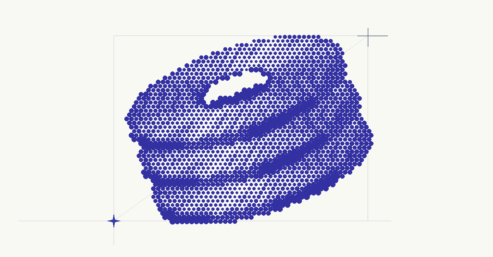
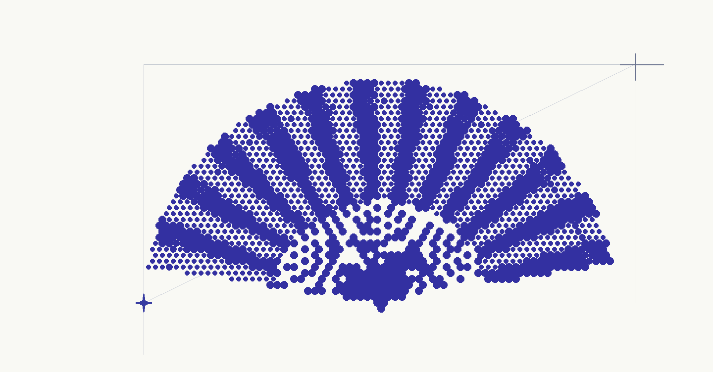

跳到正文
物与界面
Design portfolio
/
2026
物与界面
Objects
&
Interfaces
周熙皓
／
个人设计作品集
工业设计专业大三学生 · 信息体验设计方向
浏览设计方向
叠片环
/ FORM STUDY
拖动旋转
旋转
045°
立体
正视
设计方向
Discipline index
3 个方向

产品设计
↗
Product design
UI / UX
↗
Interface & experience

文创设计
↗
Culture & craft